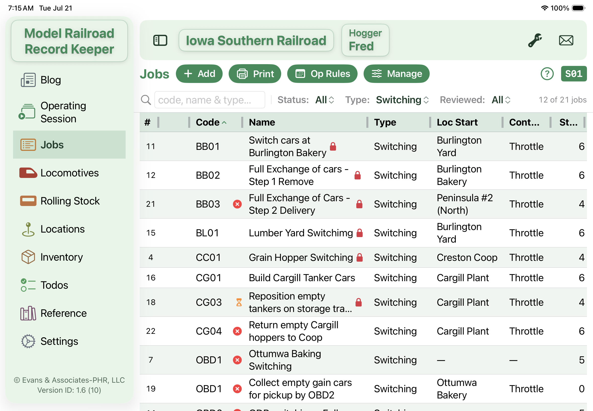
Every Job on Your Layout, One Scannable List
The complete roster of switching, touring, and delivery jobs you've built — sortable, searchable, and filtered down to exactly the work you care about right now.
- Narrow the list with <strong>Status, Type, and Reviewed filters</strong> that cascade into each other, so you never scan past jobs that don't matter
- Search across a job's code, name, type, and description to jump straight to the one you want
- Read session-readiness at a glance — an orange hourglass flags an <strong>Unavailable</strong> job and a red ✕ marks one that's <strong>Broken</strong> and out of service
- Sort and resize every column — number, code, name, type, start location, control type, and step count — with widths that stick across launches
- Print the Master Job List, or a full Schedule report laying out each job's conflicts, prior jobs, and released jobs

Build a Job Once, Run It Every Session
The full job record — who pulls it, where it starts and ends, the tracks it uses, and the ordered steps your operator follows down the line.
- Capture the essentials in one card — code, name, job type, assigned locomotive, and <strong>WiFi or Throttle</strong> control
- Map the route with a start and end location plus the exact track at each end
- Write an ordered step list, reordering with up/down buttons or slotting a step in between with a half-number like 1.5
- Mark which tracks the job <strong>locks while running</strong>, so the operating board can keep conflicting jobs apart
- Toggle Available, Reviewed, and Broken, then print a full Detail sheet or a trimmed Job Card for the operator
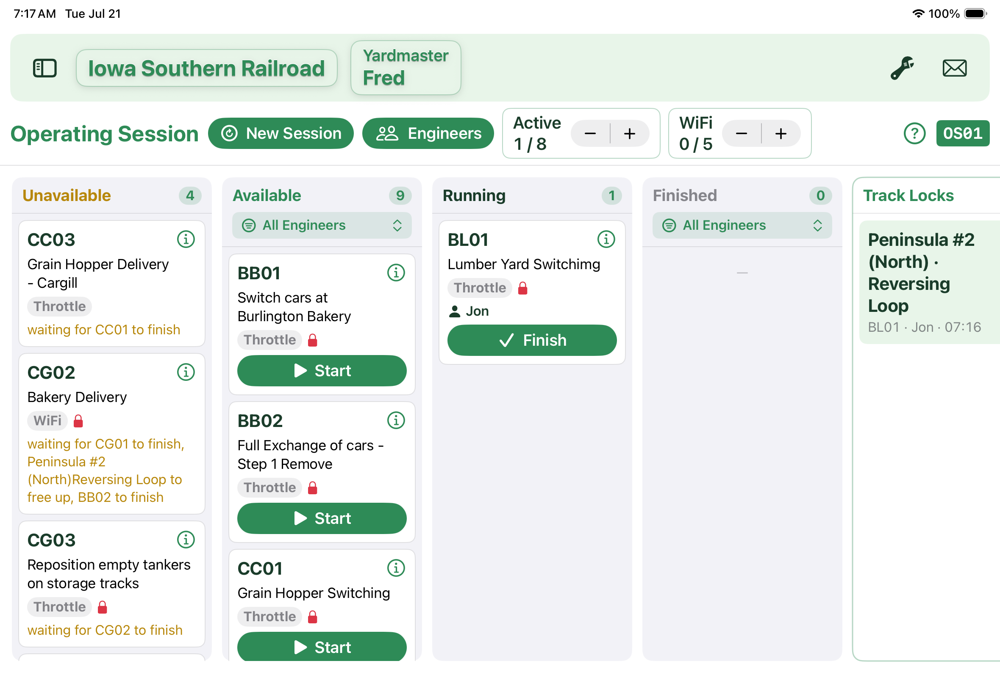
No Two Trains on the Same Track — Ever
Track Locks turn your trickiest chokepoints into automatic dispatching, holding a reversing loop or interchange for one job while everyone else waits their turn.
- When a job starts, every track it holds <strong>locks automatically</strong>, and any job needing that track is held back until it clears
- See exactly what's occupied — the Track Locks column lists each held track with the job and engineer holding it
- Protect shared bottlenecks like a reversing loop, interchange, or single passing siding where only one job can work at a time
- Read why a job is waiting — its card names the locked track or running conflict keeping it out of the Available lane
- Free a track the instant it clears — tap the open padlock to release it, and the job waiting on it jumps to Available
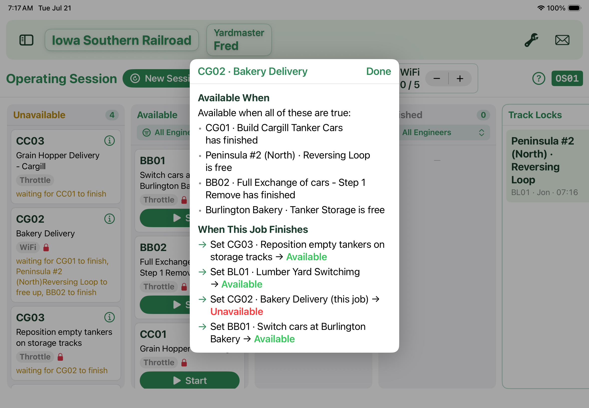
Teach the Board Your Session's Logic
Give each job an Available-When rule and a finish action, and the board arms the right work at the right moment — no clipboard, no dispatcher juggling it in their head.
- Set the conditions a job needs before it's ready — another job has finished, a conflict isn't running, or a track is free
- Combine tests with <strong>AND or OR</strong> so a job clears to Available only when the whole layout lines up
- Chain the session with Finish Actions — as one job wraps, it opens or closes other jobs to arm the next leg of work
- Model an out-and-back run, where a job parks itself Unavailable on arrival, then re-arms for its return trip
- Tap any card for a plain-language readout of its <strong>Available When</strong> conditions and <strong>When This Job Finishes</strong> actions
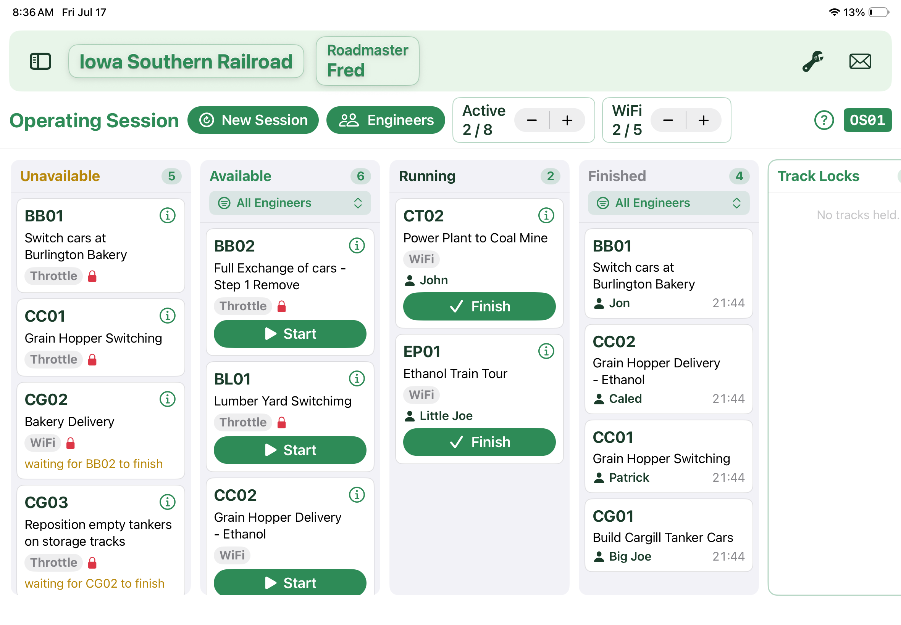
Run the Whole Session From One Living Board
Every reviewed job flows across the lanes — Unavailable, Available, Running, Finished — updating on its own as you start work, assign engineers, and finish jobs.
- Watch jobs move themselves between lanes as the board works out what's ready from priors, conflicts, and track locks
- Cap how many jobs run at once with a settable <strong>Active limit</strong>, plus a WiFi sub-cap that turns red the moment those slots fill
- Start a job and assign it to an engineer from your present-tonight roster, then tap Finish when it's done
- Avoid double-booking — assigning an engineer who already ran a job, or is already running one, prompts you before it commits
- Reset the layout for a fresh session in one tap, then review run totals per engineer in the Engineer Report

Your Whole Fleet on One Screen
Every locomotive you own at a glance — photo thumbnails, road numbers, and the DCC details that matter, all in one sortable roster.
- See each engine with a <strong>photo thumbnail</strong> beside its road number, railroad, model, and manufacturer
- Spot what's ready to run at a glance with the <strong>Sound</strong>, DCC, and Available columns right in the list
- Narrow the roster with smart <strong>Railroad, Manufacturer, and Model filters</strong> that only ever offer values you actually own — so they can't hide your whole fleet
- Search across road numbers, names, models, and notes to find any engine in a keystroke
- Save your own <strong>column views</strong>, resize and re-sort any column, and print a roster or a full Function Key Matrix

Every Detail of Every Engine, Organized
One tidy record per locomotive — identity up top, then six folder tabs that keep everything from decoder specs to purchase history exactly where you expect it.
- Keep the essentials front and center — <strong>Road #, Railroad, Model, and Manufacturer</strong> live in a header card above six tabs: Basic, DCC, F-Keys, CVs, Values, and Other
- Capture the full DCC picture — decoder type, <strong>DCC address, sound card, stay-alive</strong>, and an install note for how it was wired
- Label all your <strong>F1–F28 function keys</strong>, and Auto-fill a diesel or steam baseline from the loco's sound card in one tap
- Document changed <strong>CV settings</strong> in a keypad-friendly list — a lifesaver for re-programming a decoder after a reset
- Add a <strong>photo you can enlarge and crop</strong>, then track scale, era, wheel arrangement, owner, value, condition, and service history
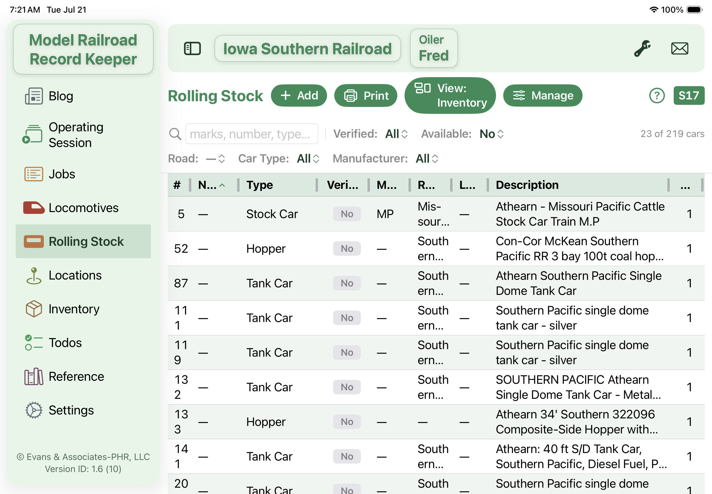
Command Your Entire Car Fleet
The full freight and passenger roster with photo thumbnails, reporting marks, and car types — built to handle hundreds of cars without losing a single one.
- Browse every car with a <strong>photo thumbnail</strong>, number, type, road, manufacturer, and a quick description
- Track physical cars, not just rows — a <strong>Quantity</strong> field counts runner-packs correctly, so the count chip reads true fleet size
- Filter by <strong>Road, Car Type, Manufacturer, or Verified</strong> with cascading menus that only show values you actually have
- Mark cars reviewed on the fly with the inline <strong>Verified</strong> toggle — no need to open each record
- Pull your whole Rolling Stock inventory in with <strong>Import Cars from Inventory</strong>, then print a roster or 3×5 car cards four to a page
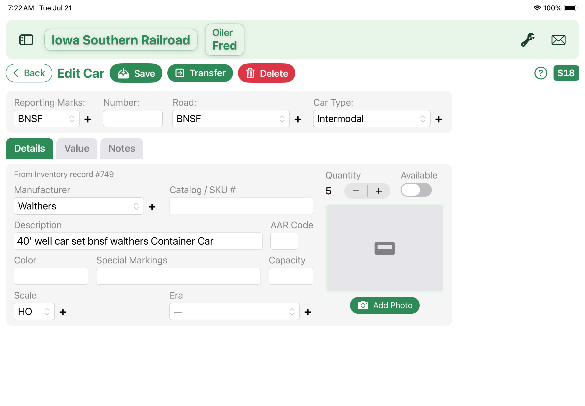
A Complete Record for Every Car
One organized card for each piece of rolling stock — reporting marks and number up top, then Details, Value, and Notes tabs for everything else.
- Anchor each car with its <strong>reporting marks, number, road, and car type</strong> from shared, editable lists used across the whole app
- Log the full spec on the <strong>Details tab</strong> — manufacturer, catalog #, scale, era, length, NMRA weight, coupler type and height, color, and AAR code
- Track collecting value on its own tab — <strong>purchase price, current value, where you bought it</strong>, date acquired, and condition
- Stand one record in for a whole set with <strong>Quantity</strong>, and flag a car Weathered or Custom in Notes
- Queue a car to the <strong>Card Sheet</strong> for printing, Transfer it to another layout, or print a one-page Detail Sheet — all from the same form
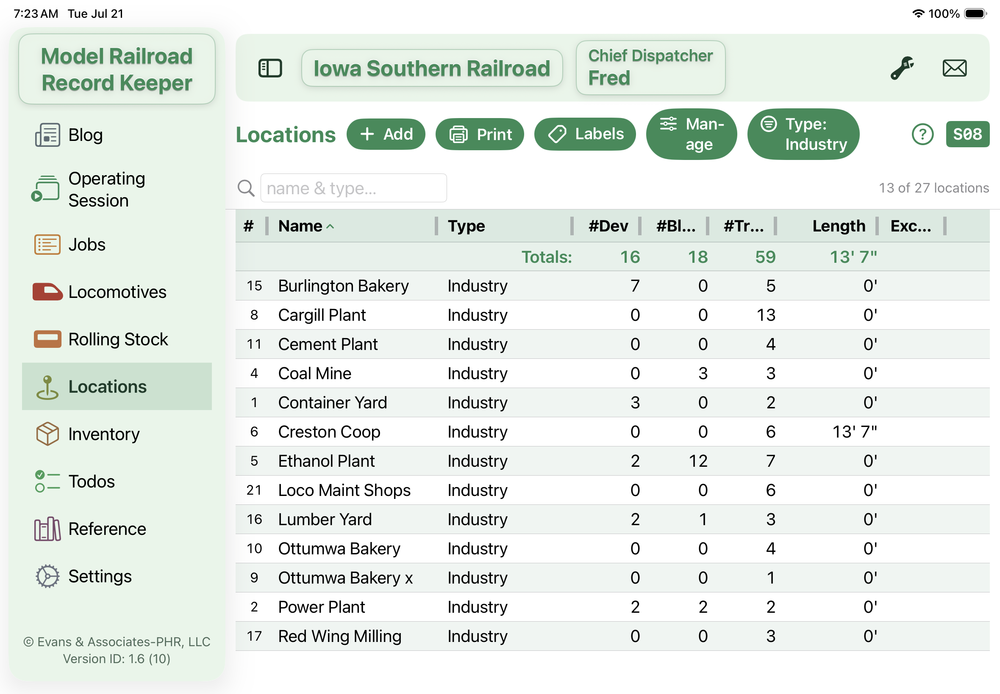
Every Industry on Your Layout, at a Glance
A living roster of the towns and industries on your railroad — each one's tracks, buildings, and devices lined up in one sortable table with total siding length figured for you.
- Filter down to just the <strong>Industries</strong> you're switching — or Yards, districts, any location type — with a smart filter that never hides every spot.
- See device, building, and track counts for each location at a glance, with a footer row that totals every visible siding's length.
- Sort and resize columns however you work — by name, type, track count, or length — and the app remembers your setup.
- Search by name, type, or notes to jump straight to any place on the railroad in a keystroke.
- Print a Locations Summary or a full details report, or batch-print stick-on labels for just the spots you tick.
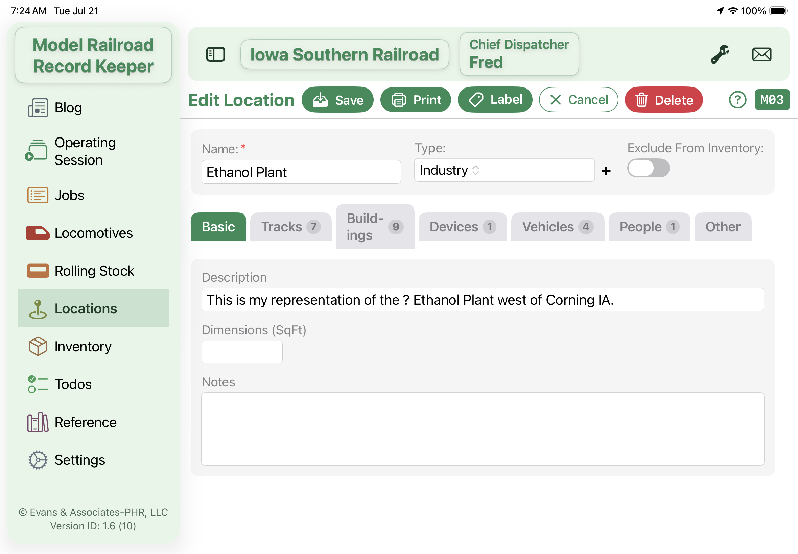
Model Every Industry Down to the Last Detail
One place to capture everything about a location — its tracks and their lengths, the buildings and devices on the ground, even the vehicles and figures — all sorted into tabs with live counts.
- Keep the essentials — <strong>Name, Type, and the Exclude toggle</strong> — pinned in a header card no matter which tab you're on.
- Log every track with its type, length, and notes, and watch the tab tally your running total siding length as you go.
- Catalog the buildings, devices, vehicles, and figures on site, each with its maker, quantity, and description.
- Read the live count on each tab to see what's already filled in without opening a single one.
- Print a full Location Detail sheet, or a large-type label with the location's tracks and their descriptions.
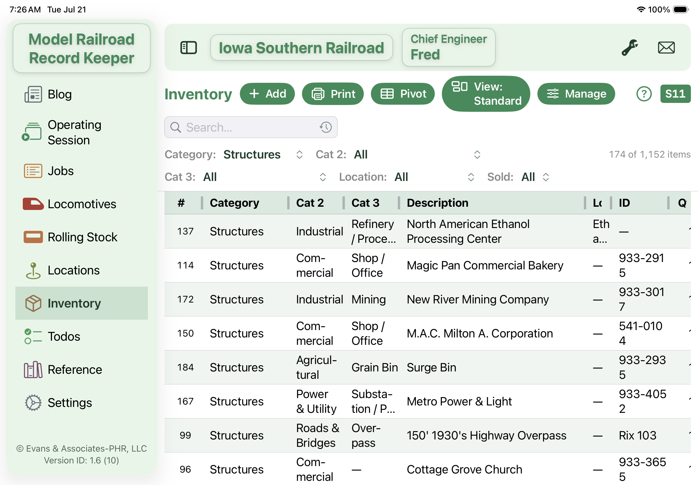
Your Whole Collection, Sorted the Way You Want
Every structure, detail part, and piece you own in one searchable table you can filter, re-column, and print exactly how you like it.
- Narrow to just your <strong>Structures</strong> — or drill three category levels deep and by storage location — with filters that never leave you an empty list.
- Search across description, ID, maker, location, and buy notes, with your last five searches a single tap away.
- Build and save Custom Views so each column layout — value, price, color, quantity — is one pick away.
- Spot anything running low instantly: items at or below their reorder level get a soft red highlight.
- Print your list exactly as filtered and sorted, or jump to the pivot to total everything up.
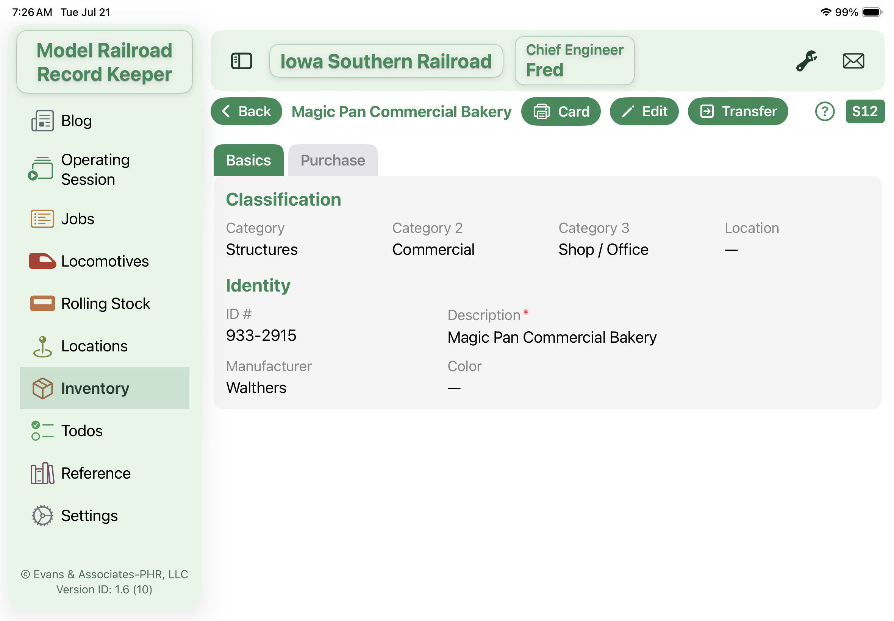
Every Item's Full Story on One Card
Capture a piece's identity, classification, and photo alongside its full purchase and value history — split cleanly across a Basics and a Purchase tab.
- Classify each piece down a three-level <strong>Category</strong> cascade and pin it to a storage spot or layout location.
- Snap or attach a photo so you can recognize the item at a glance right from its card.
- Track what you paid — company, purchase date, quantity, and value each — with the total figured for you automatically.
- Flag an item for sale with a price, set a reorder level, and record the date when it sells.
- Print a tidy item card to share or file, straight from the detail screen.
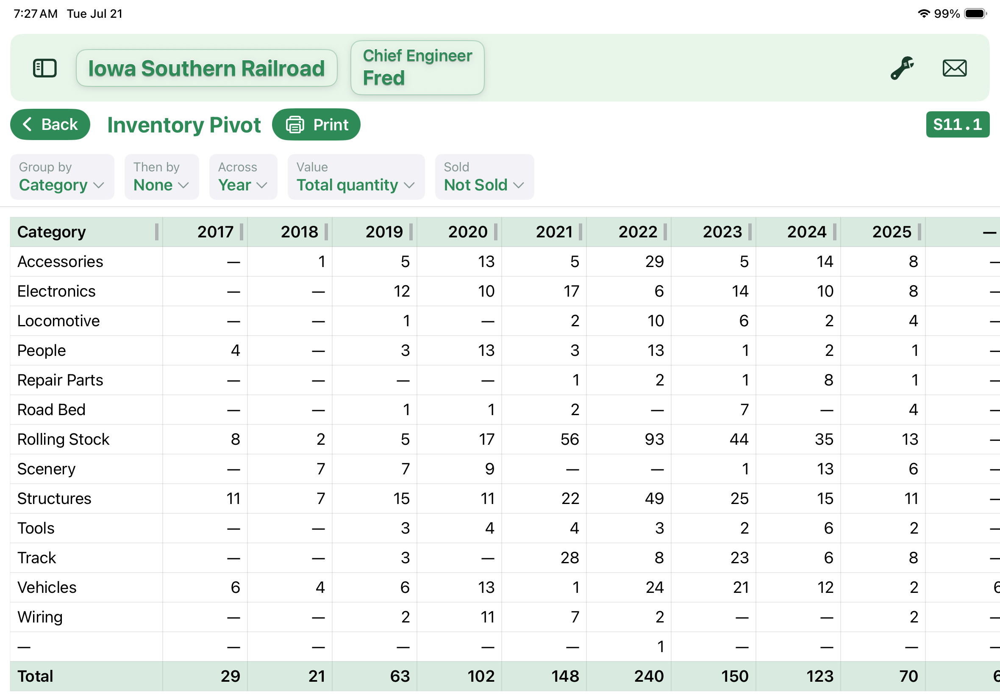
Slice Your Collection Any Way You Like
A no-fuss cross-tab that totals your whole collection by any grouping you choose — Category against the year you bought, quantities by maker, value by location.
- Group rows up to two levels deep — say <strong>Category</strong> then Category 2 — and spread any dimension across the top.
- Break your collection down over time, using the Month or Year each item was purchased as the columns.
- Switch every cell between item count, total quantity, or total dollar value with a single pick.
- Read subtotals, row and column totals, and a grand total all figured automatically.
- Print the pivot to a PDF and pick up right where you left off — it remembers your last setup.
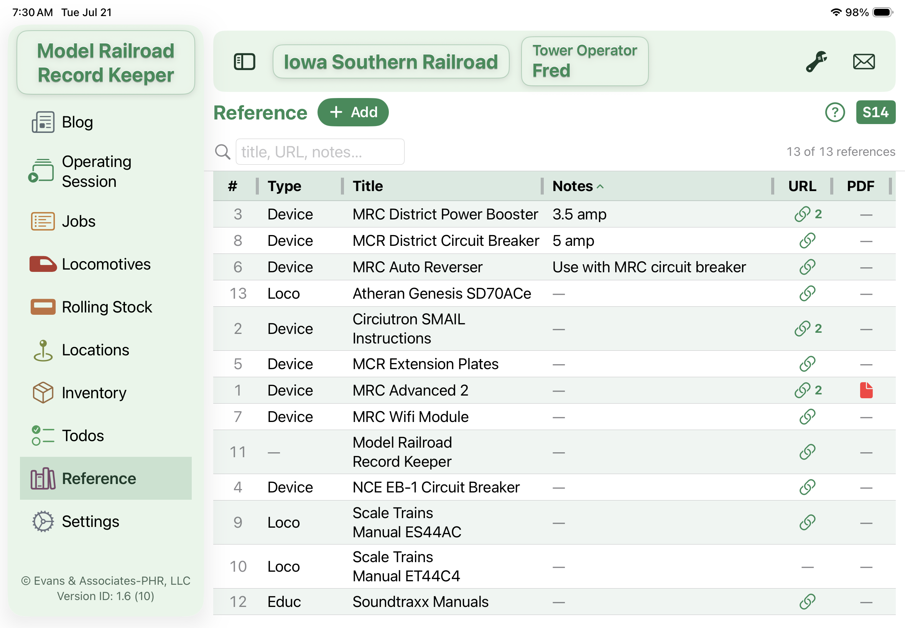
Your Whole Reference Library, One Tap Away
Every manual, decoder guide, and wiring diagram you rely on — gathered in one searchable list so the answer is never buried in a browser bookmark.
- Keep manufacturer manuals, DCC decoder guides, and wiring diagrams together, each sorted by <strong>Loco, Device, or Educ</strong> type
- See at a glance which entries carry saved links — a badge counts how many, up to five — and which have a PDF attached
- Find any document instantly with search across titles, URLs, and notes
- Sort or resize any column — number, type, title, or notes — to read the library your way
- Add your own reference types beyond the built-in Loco, Device, and Educ
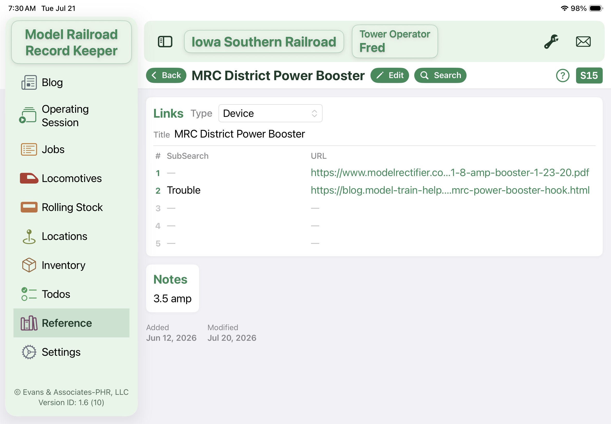
Everything You've Saved About One Piece of Gear
A single card that gathers up to five hand-picked web links, an attached PDF, and your own notes for one locomotive or device.
- Store up to <strong>5 saved links</strong> per reference, each labeled by the SubSearch keywords you found it with, so the right page is always one tap away
- Tap any saved link to reopen it in the in-app browser aimed at that same slot — swap in a better page whenever you find one
- Attach a PDF and <strong>preview it right inside the app</strong>, with its file size shown and a note when the file lives on another device
- Set the reference Type — Loco, Device, or Educ — and jot free-form notes like an amp rating or wiring detail
- Hit Search to web-search the title and drop the result straight into a link bucket, no copy-and-paste required
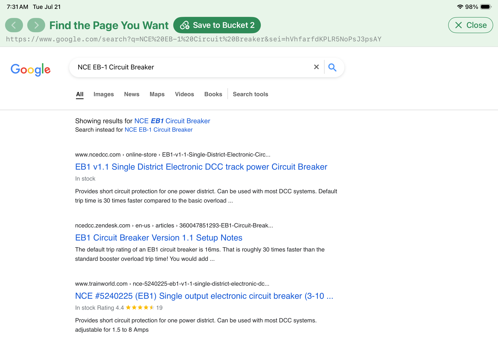
Find the Right Page and Save It Without Leaving the App
A built-in web browser that keeps your search — and the link you choose — right inside Track Runner.
- Search the web for a manual or spec sheet and browse the results in a <strong>full-screen in-app browser</strong>, never bouncing out to Safari
- Watch the live address readout so you always know exactly which page <strong>Save to Bucket</strong> will capture
- Grab the page you want with one tap and stamp its link straight onto the reference — no clipboard, no app-switching
- Move freely with Back and Forward until you land on the perfect page
- Every link — even ones that try to jump to YouTube or the App Store — stays in the browser so the capture never breaks
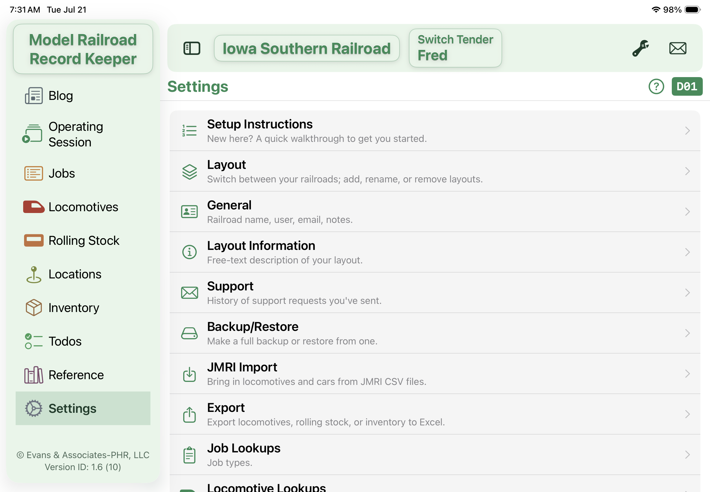
One Place to Tune Your Whole Railroad
The control room behind the app — every setting, lookup list, and housekeeping tool for your railroad gathered into one tidy menu.
- Run more than one railroad and <strong>switch between them instantly</strong> from the Layout screen
- Keep everything safe with full backups you can hold — and restore them in a tap
- Bring your fleet in fast by importing locomotives and cars from JMRI CSV files
- Export your roster, rolling stock, or inventory straight to Excel
- Fine-tune the lists behind every form — manufacturers, road names, car types, sound cards, and more
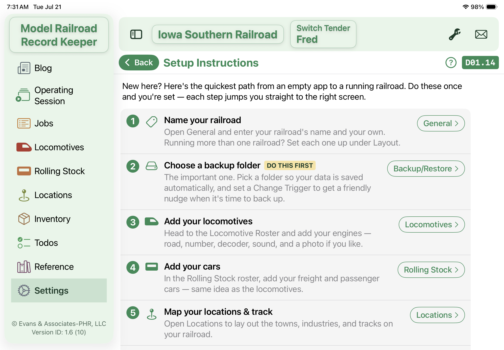
From Empty App to Running Railroad
A short, numbered walkthrough that takes you from a blank slate to your first operating session — with a shortcut on every step.
- Start by naming your railroad and yourself, then choose a backup folder first thing
- Add your locomotives — road, number, decoder, sound, and a photo if you like
- Add your freight and passenger cars the same easy way
- Map out the towns, industries, and tracks that make up your layout
- Build operating jobs and start a session — <strong>every step jumps you straight to the right screen</strong>
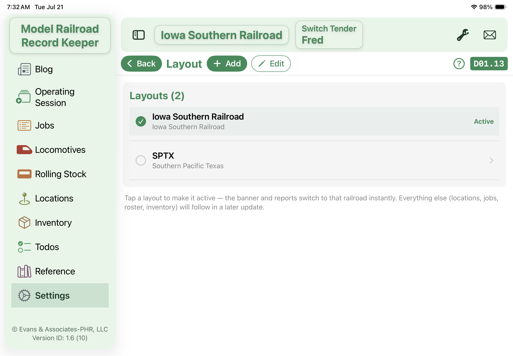
Two Railroads, One App
Keep a home road and a club layout — or any number of separate railroads — each fully self-contained and a single tap apart.
- Keep each railroad's <strong>locations, jobs, roster, and inventory completely separate</strong>
- Tap any layout to make it active — the banner and every screen follow instantly, no confirmation needed
- Add, rename, or remove layouts as your collection grows
- Share the busywork — lookup lists, manuals, and todos carry across every layout
- Flip over to check something on the other railroad, then flip right back — switching is always safe
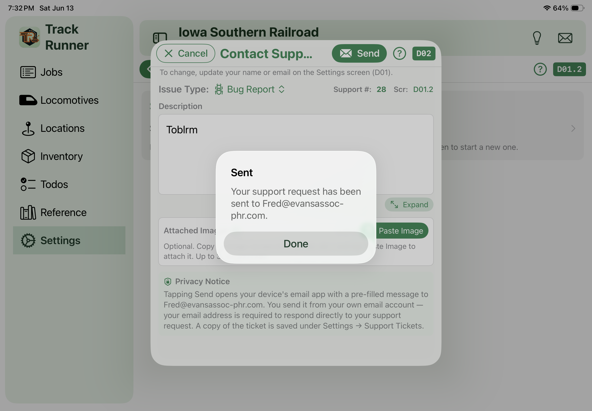
Help That Knows Where You Are
A quick note to the developer — with the screen you were on riding along automatically, so your question lands with context.
- Pick your kind of request — <strong>Bug Report, Feature Request, Question, or Other</strong>
- The screen you came from is stamped on every message, so support sees exactly where you were
- Attach up to three screenshots — just copy an image and tap Paste
- Every request gets its own support number and is saved to your ticket history for easy follow-up
- Your name and reply-to email come straight from Settings, so there's nothing to retype
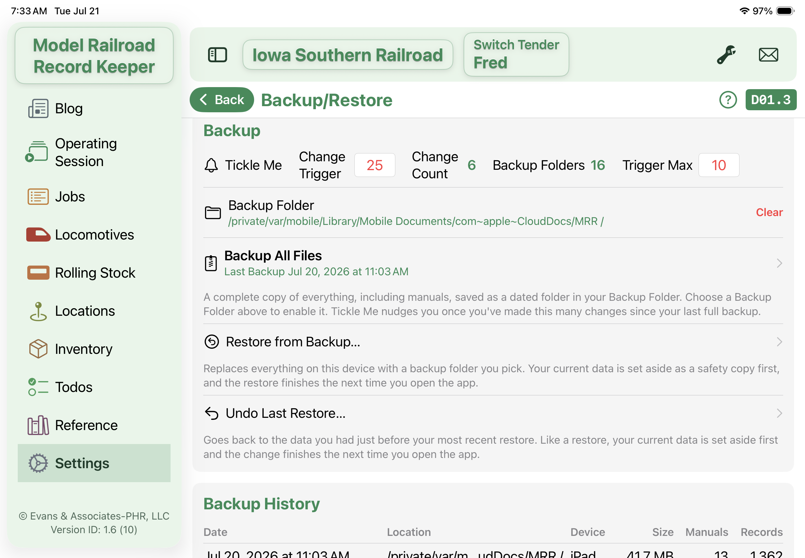
Your Railroad, Safe and Recoverable
A complete, dated copy of everything you've built — database and manual PDFs alike — saved wherever you keep your files.
- Save a <strong>full backup you can hold</strong> — your entire database plus every manual PDF, in one dated folder
- Restore any backup with a record-count comparison shown first, so you always know what you're replacing
- Changed your mind? <strong>Undo Last Restore</strong> puts back exactly what you had before
- Let Tickle Me nudge you to back up once you've made a set number of changes — you pick the trigger
- Review every past backup at a glance: date, size, manuals, and record counts in one history table
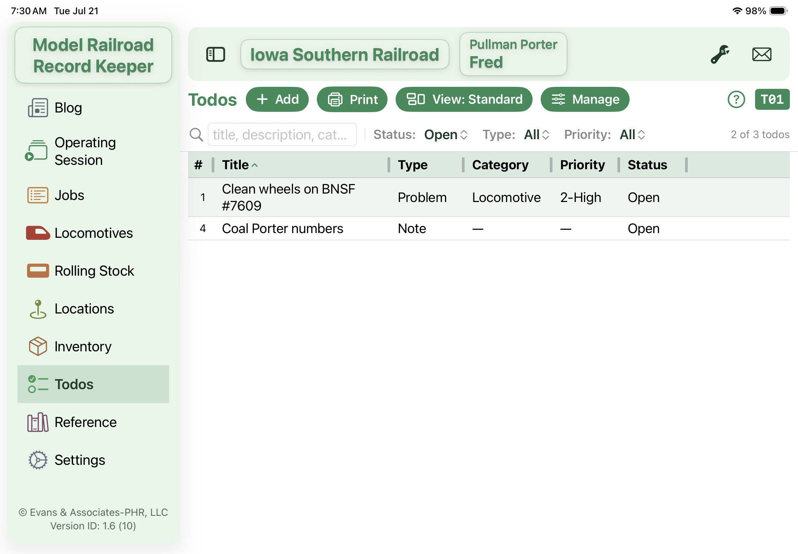
Every Layout Task, Captured and Under Control
A running punch list for your whole railroad — repairs, upgrades, and someday-maybe ideas, each tagged and sorted so nothing slips through the ballast.
- Log any job with the details that matter — <strong>type, category, priority, and status</strong> — so a wobbly turnout and a scenery someday-idea never get confused
- Zero in fast with cascading <strong>Status, Type, and Priority</strong> filters plus a search box that scans titles, descriptions, categories, and who asked for the work
- Build your own <strong>custom views</strong> — choose the columns, order, widths, and sort you like, and save each layout to switch back to anytime
- Print exactly what you need: the full Todo List, a Completed Tasks by Date report, or the current view just as you've arranged it on screen
- Keep the list yours with fully editable lookups for types, categories, priorities, statuses, and requesters
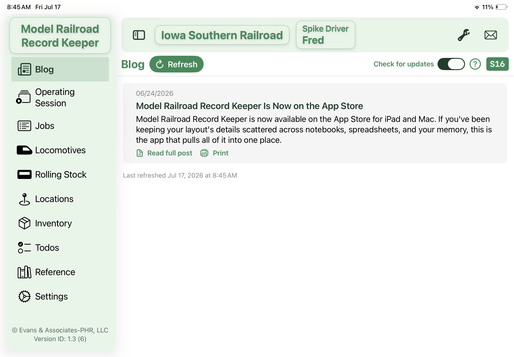
News, Tips, and How-Tos — Right in the App
The latest posts from the workbench — feature deep-dives, how-to videos, and announcements — brought straight to you and read without leaving the app.
- Catch every announcement — <strong>new posts are marked New</strong> until you read them
- Read the full post in a built-in reader, or open it in Safari when you'd rather
- Spot the big news fast — key posts carry an <strong>Important</strong> badge
- Tap Refresh for the newest posts, or Mark All Read to clear the count
- Print any post for AirPrint or PDF, and switch update checks off whenever you like
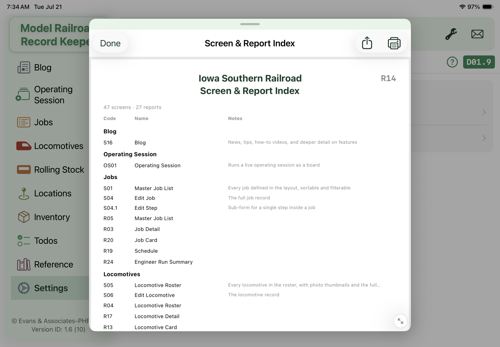
Printable References for the Whole App
Settings-level printouts that document how your app is laid out — ready to share or keep by the layout.
- Print the <strong>Screen & Report Index</strong> — every screen and report in the app, grouped by category with its code
- Always accurate: the index is built from the app's own help, so it never drifts out of date
- Print the Inventory Classification outline — your full category tree as a clean, indented list
- Send either one to AirPrint, or save it as a PDF to keep or share
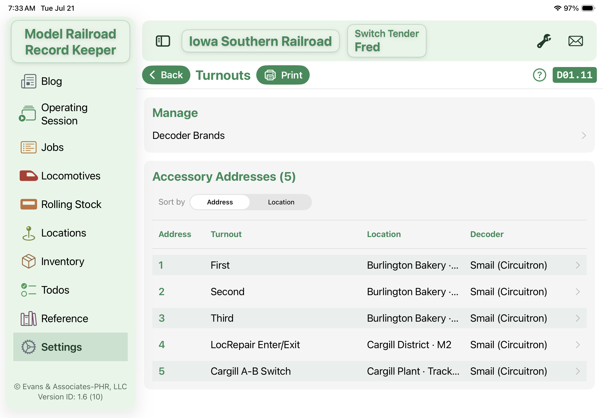
Every Switch on Your Layout, Documented and Under Control
One home for all your turnouts — capture the DCC accessory decoder behind each switch so control and troubleshooting are never a guessing game.
- Record what actually drives each switch — <strong>accessory decoder address, port, and decoder brand</strong> — so you always know which device throws which turnout
- Pick decoders from a ready-made brand list (Digitrax DS64, NCE Switch-It, Tam Valley, DCC Concepts Cobalt, Tortoise) that you can rename or extend to match your own bench
- Add turnouts right on each track's Edit screen and watch them <strong>roll up automatically</strong> into one layout-wide list
- Sort every switch by address or by location to zero in fast when a turnout misbehaves on the layout
- Print the <strong>Accessory Address List</strong> — a landscape troubleshooting sheet of every turnout, address, port, location, and decoder — to keep beside the throttle